Temporada 9
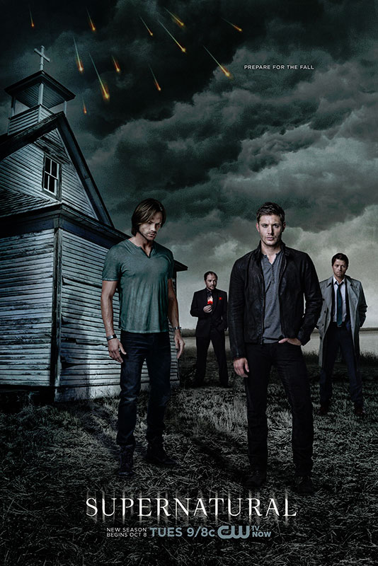
A Nona temporada começa com Sam no hospital devido a ele ter assumido os testes para fechar o portão do inferno e, mesmo falhando, Sam começa a ter efeitos colaterais. Dean, em um ato de desespero para salvar seu irmão, ora pela ajuda de anjos. Quando Ezequiel, um anjo, aparece, faz um trato com Dean querendo ajudá-lo: Ezequiel poderia curar Sam se, entrasse em seu sonho e adentrasse o corpo de Sam. Dean, pensando no irmão,aceita a oferta e Sam começa a conviver com um anjo dentro de si. Um tempo depois, Abaddon retorna com o objetivo de retomar o inferno.
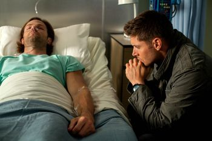
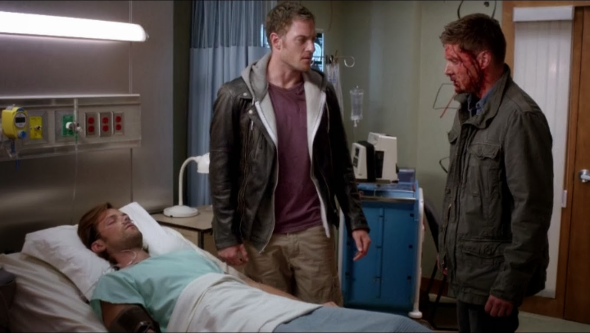
Castiel não pode fazer nada quando Metatron extrai sua graça, o que o faz virar humano. Castiel é sequestrado por um grupo de anjos. Depois de dialogar com seu sequestrador, Castiel consegue convencê-lo a lhe soltar. Depois de solto, Castiel mata o guarda, mas não antes de extrair sua graça, retomando seus poderes temporariamente. Logo eles descobrem que Ezequiel não é quem diz ser. Na verdade ele é outro anjo chamado Gadreel, que estava trabalhando com Metatron. Para provar sua lealdade para Metatron, Gadreel teve que matar algumas pessos, inclusive Kevin. Depois de uma longa procura por Gadreel eles o apreendem e o torturam. Crowley sugere que ele pode entrar no corpo do Sam e fazê-lo expulsar Gadreel. Dean aceita, então Crowley entra no corpo de Sam e o ele expulsa o intruso.
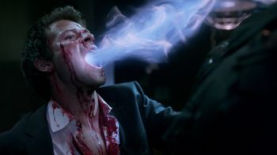
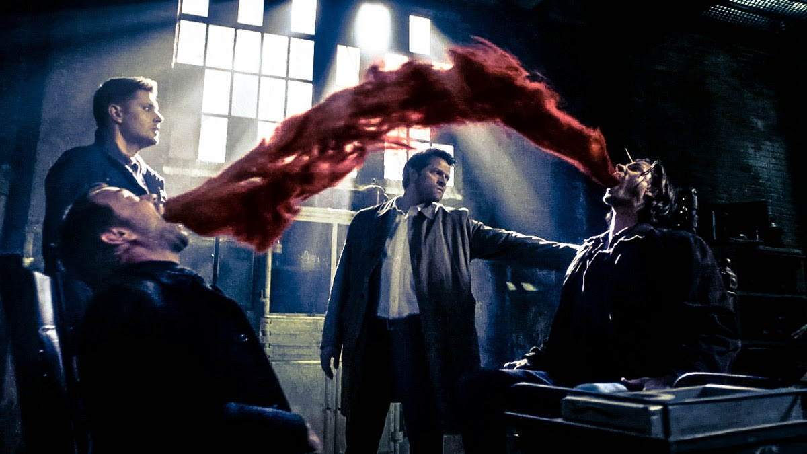
Buscando recuperar seu lugar como Rei do Inferno, Crowley pede a Dean por ajuda para encontrar "A Primeira Espada", a única arma que pode matar Abbadon. Sabendo que ele deve um favor a Crowley por ajudar Sam, e também querendo que Abaddon morra, Dean relutantemente concorda e os dois partem em uma viagem. No entanto, Dean e Crowley estão completamente despreparados quando descobrem quem tem a espada - Caim, o primeiro filho. Enquanto isso, Sam está de volta ao bunker com Castiel, que percebe que há alguma sobra de graça dentro de Sam. Se eles puderem extraí-la, eles poderiam usar a graça para rastrear Gadreel. O único problema é que o procedimento pode causar danos permanentes a Sam.
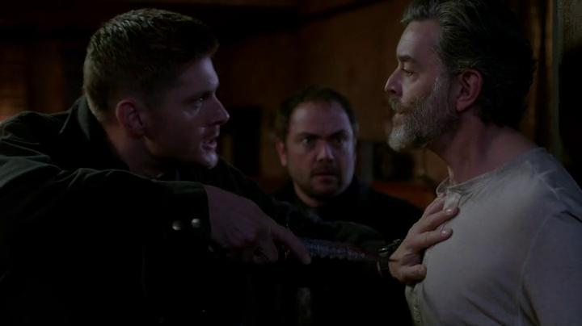
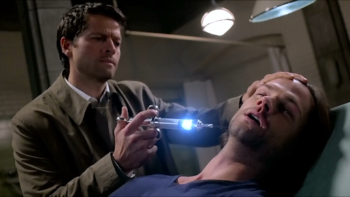
Dean está frustrado pois não consegue encontrar Crowley, que prometeu encontrar A Primeira Espada. Quando Crowley finalmente chama Sam e Dean, ele diz que precisa de ajuda, pois está se viciando em sangue humano, devido ao último teste para fechar os portões do inferno. Para piorar a situação, ele tinha um demônio ajudando-o a encontrar sangue, mas ela o vendeu e disse a Abaddon que ele e os Winchesters estavam procurando pela espada. Os irmãos precisam encontrar a arma antes de Abaddon, então eles pedem a ajuda de um ex-membro dos Homens de Letras. Eles encontram a casa de Cuthbert Sinclair descobrem que ele possui a Lâmina, mas Cuthbert não pensa em dá-la aos irmãos. Ele quer que sua coleção fique completa e tenta aprisionar Dean, que o mata com o poder combinado da Marca de Caim e da Primeira Espada.
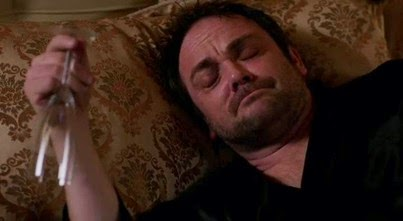
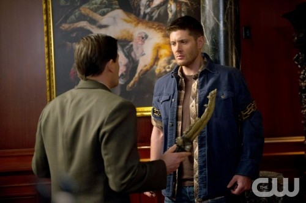
Castiel captura um dos anjos de Metatron e pede ajuda a Sam e Dean no interrogatório. Dean avidamente aceita, o que não passa despercebido por Sam. Enquanto isso, Abaddon exige que Crowley a ajude a matar Sam e Dean. Quando ele se recusa, ela revela uma estratégia de barganha chocante. Crowley aceita a chantagem e atrai os irmãos até Abaddon, onde Dean a mata. Além disso, Castiel estabelece uma reunião com Gadreel. Depois de um ataque massivo contra os anjos, Castiel chama Sam e Dean por ajuda. Quando saem, a ânsia de Dean de trazer a Primeira Espada não passa despercebida por Sam, que está preocupado com o custo para seu irmão sempre que ele usa a Espada. Dean sente os efeitos da Primeira Espada, e Metatron faz sua jogada contra a humanidade, fazendo as pessoas acreditarem que ele é o novo messias. Enquanto isso, Sam, Dean e Castiel enfrentam consequências chocantes ao levar a luta para Metatron. Dean e Sam vão até o local onde se encontra Metatron. Dean nocauteia Sam para que ele fiquei fora do combate principal e vai até o lugar em que está Metatron. Os dois lutam, mas devido à superioridade dos poderes de Metatron, ele vence e mata Dean, que, masi tarde, ressucita como demônio, devida à marca
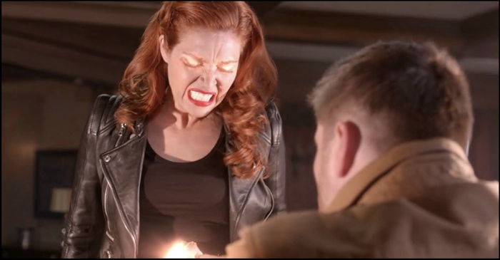
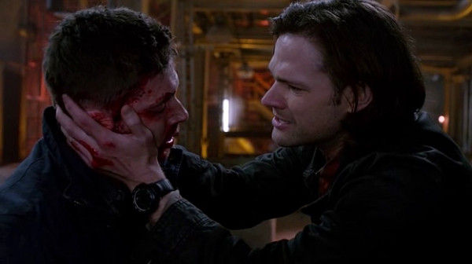